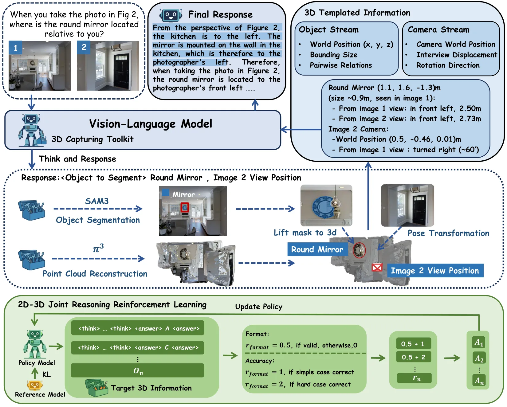
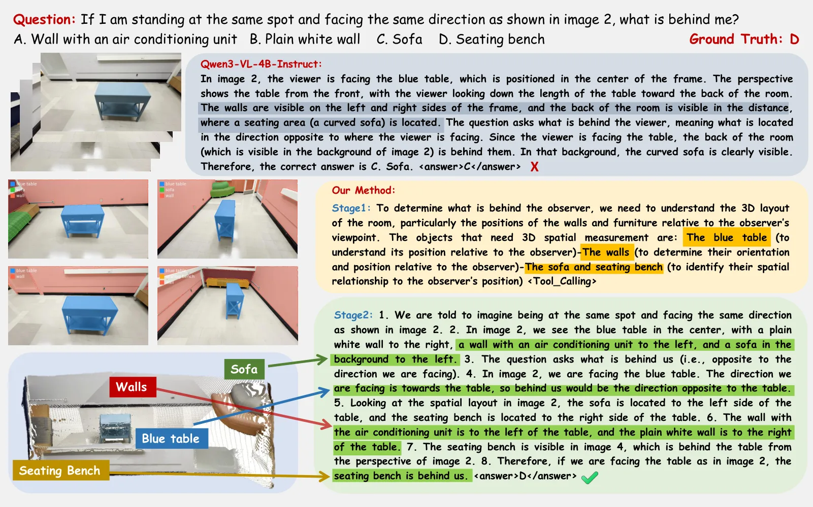
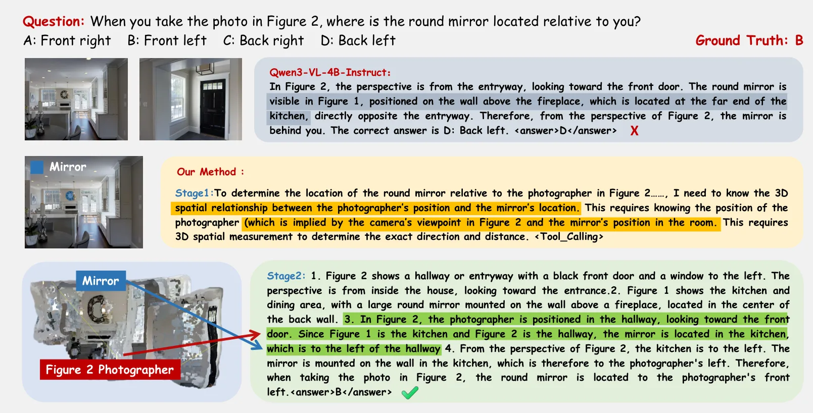
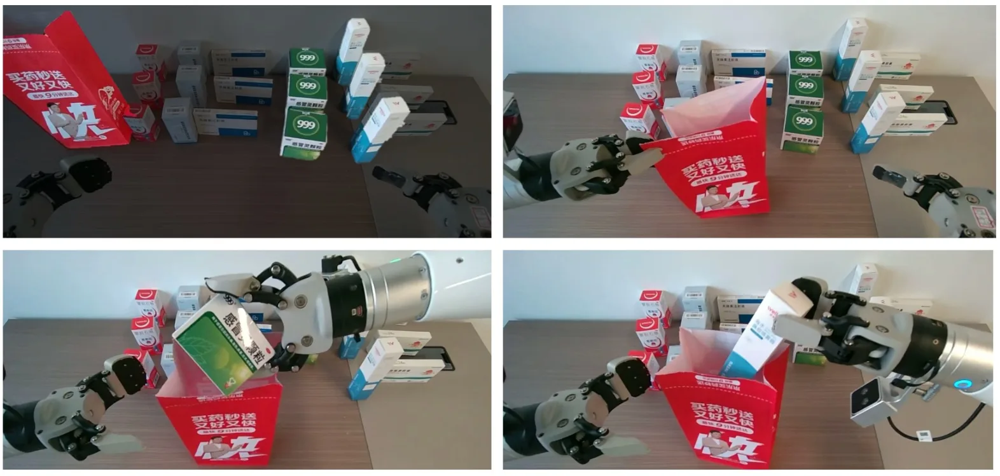
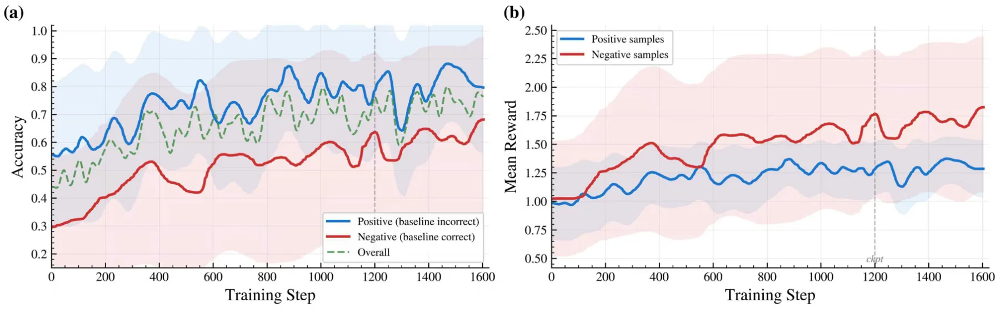

Think-Capture：为视觉语言模型的空间推理做主动 3D 几何获取
Think-Capture: Active 3D Geometry Acquisition for Spatial Reasoning in Vision-Language Models
把几何证据从 dense feature 改成“按需获取 + 符号化文本”：100 tokens/查询（原始工具输出 205，降 51%）。Think-Capture-4B 在 MindCube-Tiny 54.4%（比 Qwen3-VL-4B 高 21.5 点、比 Think3D-4B 高 16.2 点），MMSI positional 39.1（+7.9），ViewSpatial 42.8（+5.2）；整套栈可放进单张 24 GB GPU，并在 Agibot G1 上作异步高层推理。
MindCube-Tiny
vs backbone
tokens / query
GPU memory
作者、单位与技术谱系 · Research context
作者与单位
研究脉络
- Think3D（2025）问题前作关系：同样让 VLM 调 3D 工具做空间推理，本文的推进是“查询条件化选择目标 + 符号状态压缩 + 负样本强化学习”。[论文 Table 1]
- Qwen3-VL 系列方法基座关系：2B/4B/8B 三个基座全部验证，增益稳定在 19.9–21.5 点，说明方法不依赖特定容量。[论文 Table 3]
- GRPO（DeepSeekMath 等）方法基座关系：直接采用无 critic 的组相对策略优化，奖励改为答案正确性 + 格式合规，并加入正负样本非对称奖励。[论文 §3.4 与 Table S1]
合作网络
- CUHK-Shenzhen FNii ↔ UCD ↔ UESTCFNii-Shenzhen, CUHK-Shenzhen → University College Dublin关系：共同署名[arXiv HTML 作者块]
- Think-Capture → 公开仓库Think-Capture → github.com/819346675/Think-Capture关系：官方代码仓库[作者公开代码仓库]
- Think-Capture → π³ / SAM3Think-Capture → π³（几何）与 SAM3（分割）关系：技术依赖（工具链）[论文 §3 与 Table 2]
作者与单位取自 arXiv HTML 作者块（CUHK-SZ FNii 为主单位）；代码仓库来自摘要并在 2026-10-26 实测可访问；技术依赖来自方法章节与扰动实验。未推断导师/师生关系。
方法本质拆解 · What actually changed
是不是微调？
是微调 + 强化学习：以 Qwen3-VL-4B/2B/8B 为基座，用 3,032 条筛选样本做分层 GRPO，奖励 = 答案正确性 + 0.5 的格式合规。工具侧（π³、SAM3）冻结，不参与训练；感知与推理的边界因此很清楚。
加了什么先验与约束？
约束是“先选目标再取几何”：只有任务相关物体的掩码被提升，任务无关几何被过滤掉；符号状态模板进一步约束输出格式（相对位姿/朝向/距离），并用格式奖励强制模型在 <think>/<answer> 结构里作答。
推理时到底做了什么？
一次查询：VLM 选目标 → SAM3 分割 → 3D 工具提升到统一坐标系 → 符号状态文本 → VLM 结合图文作答。没有逐场景重建、没有稠密几何融合；工具调用是查询条件化的，这也是它能把上下文压到 100 tokens 的原因。
方法本质是什么？
本质是把“几何”从感知特征改写成离散、可核对的符号断言，再用强化学习教模型判断这些断言的可靠性。它改变的是证据进入语言模型的形态与可信度权重，而不是几何估计本身——所以上游位姿/掩码质量仍是天花板。
输入多视图与问题，先选目标物体再按需取几何并压成符号 3D 状态文本，用 GRPO 学会在工具证据与视觉线索间取舍，直接效果是空间问答提升且对几何扰动更稳。

桥接价值Bridge
桥接价值
这篇论文的接口设计与我们“几何 → 空间推理”那一段直接相关：它不把点云或深度图塞进上下文，而是把任务相关物体的 3D 状态压成几十个 token 的结构化文本（相对位姿、朝向、距离、可见性）。对我们来说，这意味着地图查询可以返回“可读的几何断言”，而不是让下游模型自己从稠密特征里猜。同时它明确处理了“几何会骗人”这件事：用负样本训练模型在工具输出与视觉冲突时退回视觉，这与我们对退化场景的谨慎一致。
方法与模块Method
方法摘要
三阶段：①目标选择，VLM 先判断问题涉及哪些物体，再用 SAM3 出掩码；②几何获取与抽象，3D 工具把掩码提升到统一坐标系，符号 3D 状态抽象把物体和相机状态写成结构化文本（含相机相对旋转，如“左转约 76°”）；③分层 GRPO，用基础模型与工具增强模型的分歧筛出正样本（工具修复了视觉错误）与负样本（工具推翻了正确答案），负样本奖励 +2.0 以抑制回归。
可迁移模块
第一是符号状态模板：把 3D 信息写成“谁—在哪—朝哪—多远—是否可见”，平均 100 tokens，比原始工具输出省 51%。第二是正负样本筛选法：10,000 条 MindCube 训练样本经两次推理分歧得到 3,032 条训练集，这个“用分歧造监督”的办法可以复用到任何有 baseline 的模块。第三是扰动测试协议：对坐标加高斯噪声、随机丢 30% 掩码像素，观察退化曲线，比单点精度更能说明鲁棒性。

证据Evidence
关键证据与数字
MindCube-Tiny 总体 54.4%（Qwen3-VL-4B 32.9、Think3D-4B 38.2、GPT-4o 46.8、Gemini-2.5-Pro 52.5），Among 子集 +31.1 点；MMSI positional 39.1（+7.9）、ViewSpatial 42.8（+5.2）。鲁棒性：最强坐标扰动下 46.2% 对 zero-shot 工具的差距 19.5 点；30% 掩码丢失时 52.1% 对 49.0%（无 GRPO）与 36.2%（zero-shot）。消融：只用 GRPO 不给工具 32.9→33.3；工具 + GRPO 54.4%；换成 2D box 提示低 17.5/7.1/4.9 点；换成无结构坐标堆 54.4→49.8。
边界与下一步Limits & Next Step
边界与风险
绝对水平仍是 54.4%，说明“符号几何 + 4B 模型”还远未解决空间推理；Reg-Reg 子集只提升 0.3 点，几乎无效，说明纯关系推理不靠物体几何。依赖链很脆：π³ 的位姿/深度 + SAM3 的掩码 + VLM 的目标选择，任一环出错都会污染符号状态（论文只说 <1.6% 查询无有效目标时走确定性回退）。训练数据集中在 MindCube 的合成多视图；真机只在 Agibot G1 上做异步高层推理，没有闭环控制与实时性指标。
下一步实验
把我们的重建结果（而非 π³）接到同一套符号抽象上，跑同一 benchmark，量“几何源换成我们的点云/位姿后精度掉多少”——这直接检验我们的地图能否支撑语言层查询。第二个实验是把负样本筛选用于地图质量判别：用“加几何”与“不加几何”两次推理的分歧筛出可疑地图区域，作为人工复核队列，而不是直接信模型输出。







